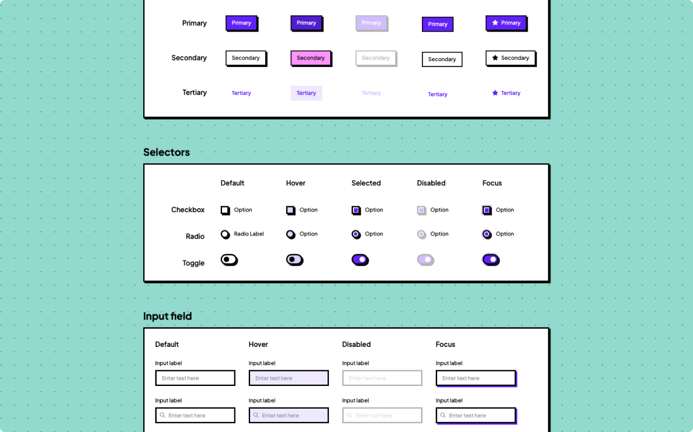
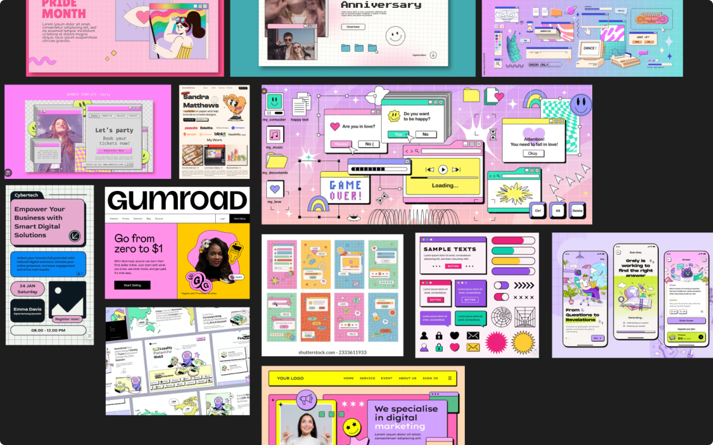
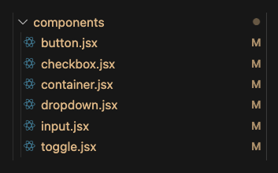
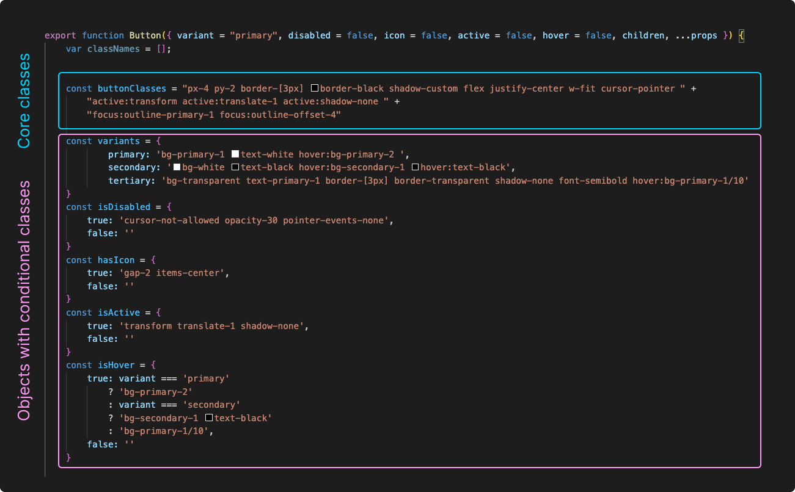
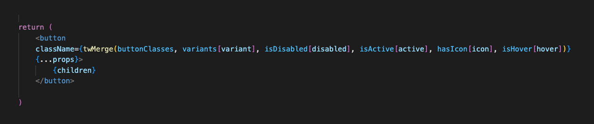
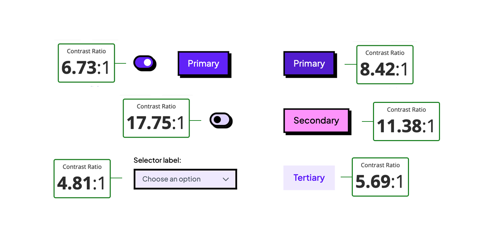

Neobrutalist UI Kit

Project Overview
I’ve been fascinated by the rise of the Neobrutalist style trend, with bold shapes, thick borders, and nostalgic
web 1.0 energy feels like a refreshing break from minimalist design. I wanted to see how far this aesthetic could go when applied
systematically, not just as decoration but as functional and reusable component library.
The result is the Neobrutalist UI Kit, a React + Tailwind CSS component library.
Building this project was also my opportunity to deepen my understanding of Tailwind CSS and experiment with
how custom utilities and design tokens could be combined to create a consistent visual language inside React components.
Role: UI Design & Frontend Development — Component architecture, React implementation, Tailwind customization
Technologies: React, Tailwind CSS, Figma
Design Process
I started with a visual exploration phase, analyzing Neobrutalist interfaces from where I identified several recurring elements that define the style:
- Visual language: Bold borders, flat colors, and slightly offset shadows for depth.
- Typography: Geometric and heavy-weight typefaces with personality.
- Color system: Limited palette using vivid accents against neutral backgrounds for contrast.

Development Process
Component Architecture
Each UI element (inputs, buttons, toggles, dropdowns) was developed as a modular React component with configurable props controlling interaction states like hover, focus, disabled, and active.
This allowed the UI Kit to display multiple visual states at once for the purpose of the UI documentation.

I used Tailwind to style each of the components on their files with the following approach:
- Grouped the component utility classes in constants for a beteter readability of the component JSX.
- Applied conditional classes dynamically using
twMerge for clean state management.
- Integrated component tokens (colors, shadows) via Tailwind theming for consistency.


Challenges
-
Class organization: Keeping JSX readable while managing Tailwind utilities
required managing long Tailwind class lists into constants and merging them dynamically.
-
Component states: Representing different states simultaneously
(hover, focus, disabled) needed flexible prop-driven logic and conditional styling.
-
Custom variables: Experimenting with CSS variables inside Tailwind
for dynamic shadow colors (e.g.
shadow-[4px_4px_0_0_var(--shadow-color)]).
UX and Accessibility Considerations
Even though the aesthetic is bold and unconventional, I focused on maintaining usability and accessibility.
Every component has a clear focus state, accessible color contrast, and logical tab navigation.
- Used WCAG-compliant contrast ratios for text and focus outlines.
- Ensured all interactive components include visible focus indicators.
- Designed components to work without relying on color alone for state differentiation.

UI Showcase
Each component embraces exaggerated borders and vivid color blocks to maintain visual coherence
while feeling handmade and expressive.
🔍 Reflections & Learnings
This project taught me how to turn a bold design concept into a functional, scalable component library, balancing aesthetics with usability. I deepened my understanding of React componentization, Tailwind customization, managing multiple component states efficiently using Tailwind variants.
Next steps
The Neobrutalist UI Kit is an ongoing exploration. Next I would like to add theme switching, improve accessibility, and maybe publish it as an open-source package with full documentation.
This project helped me refine the balance between design and engineering,
building systems that are not only beautiful but also functional and scalable.